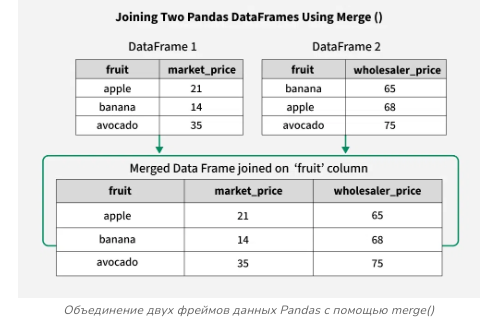
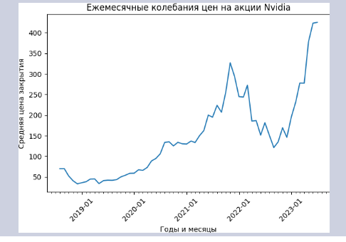

Парсинг html xml страниц
Для автоматизации парсинга и сбора данных на Python часто используются две популярные библиотеки: BeautifulSoup и Scrapy.Для парсинга веб-страниц (страниц содержащих теги) применяются в основном библиотеки selenium и beautifulsoup, а для их открытия библиотека urllib.request.
urllib.request
urllib.request - это расширенная библиотека для открытия url адресов.Модуль urllib.request содержит функции и классы, которые помогают открывать URL—адреса (в основном HTTP) в комплексе - базовая и дайджест-аутентификация, перенаправления, файлы cookie и многое другое. Содержит функции:
-
urllib.request.urlopen(url, data=None, [timeout, ]*, context=None)
url - строка, содержащая действительный, правильно закодированный URL-адрес, либо объект запроса.
data - объект, указывающий дополнительные данные для отправки на сервер, или отсутствовать, если такие данные не требуются.
Необязательный параметр timeout указывает время ожидания в секундах для блокировки таких операций, как попытка подключения (если не указано, будет использоваться глобальное значение времени ожидания по умолчанию). На самом деле это работает только для HTTP, HTTPS и FTP-подключений.
context, если указан, то это должен быть экземпляр ssl.SSLContext, описывающий различные параметры SSL. Более подробную информацию смотрите в разделе HTTPSConnection.Эта функция всегда возвращает объект, который может работать как контекстный менеджер и имеет свойства url, заголовки и статус.
Для URL-адресов HTTP и HTTPS эта функция возвращает http.client.Объект HttpResponse слегка изменен. В дополнение к трем новым методам, описанным выше, атрибут msg содержит ту же информацию, что и атрибут reason — фразу причины, возвращаемую сервером, вместо заголовков ответа, как указано в документации для HttpResponse.
from urllib.request import urlopen url = "https://stepik.org/media/attachments/lesson/245681/map2.osm" response = urlopen(url) print(response.read())
Этот код открывает указанный URL-адрес и выводит его содержимое. Обратите внимание, что содержимое возвращается в виде байтов, поэтому его можно декодировать в строку, используя метод decode():print(response.read().decode('utf-8')) -
urllib.request.install_opener(opener)
Установит экземпляр OpenerDirector в качестве глобального средства открывания по умолчанию. Установка средства открывания необходима только в том случае, если вы хотите, чтобы urlopen использовал это средство открывания; в противном случае просто вызовите OpenerDirector.open() вместо urlopen(). Код не проверяет наличие реального OpenerDirector, и любой класс с соответствующим интерфейсом будет работать. -
urllib.request.build_opener([handler, ...])
Возвращает экземпляр OpenerDirector, который объединяет обработчики в цепочку в указанном порядке. обработчики могут быть либо экземплярами BaseHandler, либо подклассами BaseHandler (в этом случае должна быть предусмотрена возможность вызова конструктора без каких-либо параметров). Экземпляры следующих классов будут находиться перед обработчиками, если только обработчики не содержат их, их экземпляры или их подклассы: ProxyHandler (если обнаружены настройки прокси-сервера), UnknownHandler, HttpHandler, HTTPDefaultErrorHandler, HTTPRedirectHandler, FTPHandler, FileHandler, HTTPErrorProcessor. -
urllib.request.pathname2url(path)
Модуль Selenium
Ссылки: Автоматизация веб-тестирования с SeleniumВведение в Selenium и его возможности Selenium — это мощный и популярный инструмент для автоматизации веб-тестирования, который широко используется разработчиками и тестировщиками для автоматизации взаимодействия с веб-страницами. Этот инструмент поддерживает множество языков программирования, включая Python, Java, C#, Ruby и другие, что делает его универсальным и гибким решением для различных проектов. Selenium предоставляет возможность автоматизировать тестирование на различных браузерах, таких как Chrome, Firefox, Safari и Edge, а также на различных операционных системах, включая Windows, macOS и Linux.
Основные возможности Selenium включают:
- Автоматизация взаимодействия с веб-элементами (клики, ввод текста, навигация и т.д.)
- Поддержка различных браузеров и операционных систем
- Интеграция с различными тестовыми фреймворками и CI/CD инструментами
- Возможность выполнения тестов параллельно на нескольких машинах
- Поддержка мобильного тестирования с помощью Appium
- Возможность создания скриншотов веб-страниц
- Работа с динамическими элементами и AJAX-запросами
Установка и настройка Selenium
Для начала работы с Selenium необходимо установить несколько компонентов. Рассмотрим установку на примере языка Python.
Установка Python и pip
Если у вас еще не установлен Python, скачайте и установите его с официального сайта. Убедитесь, что во время установки вы отметили опцию "Add Python to PATH". Это позволит вам запускать Python и pip из командной строки.
После установки Python, установите менеджер пакетов pip, если он еще не установлен. Обычно он идет в комплекте с Python, но если по каким-то причинам его нет, вы можете установить его вручную, следуя инструкциям на официальном сайте pip.
Установка Selenium
Для установки Selenium используйте команду pip:
pip install seleniumЭта команда загрузит и установит последнюю версию Selenium из PyPI (Python Package Index). Убедитесь, что установка прошла успешно, запустив Python и импортировав Selenium:
import selenium print(selenium.__version__)Установка веб-драйвера
Selenium использует веб-драйверы для взаимодействия с браузерами. Например, для работы с Chrome необходимо скачать ChromeDriver с официального сайта. Аналогично, для Firefox используется GeckoDriver, который можно скачать с официального сайта.
После скачивания распакуйте файл и добавьте его в системный PATH. Это позволит Selenium автоматически находить драйвер и использовать его для запуска браузера.
Написание простого теста с использованием Selenium
Теперь, когда мы установили и настроили Selenium, давайте напишем простой тест. Этот тест будет открывать страницу Google, вводить запрос в поисковую строку и нажимать кнопку поиска.Пример кода:
from selenium import webdriver
from selenium.webdriver.common.keys import Keys
# Инициализация веб-драйвера
driver = webdriver.Chrome()
# Открытие страницы Google
driver.get("https://www.google.com")
# Поиск элемента по имени и ввод текста
search_box = driver.find_element_by_name("q")
search_box.send_keys("Selenium")
search_box.send_keys(Keys.RETURN)
# Закрытие браузера
driver.quit()
Этот код демонстрирует основные шаги для автоматизации теста: инициализация веб-драйвера, открытие веб-страницы, поиск элемента, взаимодействие с элементом и закрытие браузера. Вы можете расширить этот тест, добавив проверки результатов поиска или автоматизировав другие действия на странице.
Beautiful Soup
Ссылки: BeautifulSoup – парсинг HTML в Python на примерахДокументация
Парсинг сайтов на Python: Руководство для новичков
Ещё ссылка
Библиотека BeautifulSoup позволяет легко извлекать информацию из XML и HTML-документов. Она преобразует HTML в дерево объектов, с которым можно работать для извлечения нужных данных. Также часто используется для скрапинга веб-страниц. BeautifulSoup позволяет трансформировать сложный HTML-документ в сложное древо различных объектов Python. Это могут быть теги, навигация или комментарии.
Установка Beautiful Soup
Для установки необходимых модулей используется команда pip3.
Для начала требуется установить lxml модуль, который используется в BeautifulSoup.
$ sudo pip3 install lxmlДалее сам bs 4 версия:
$ sudo pip3 install bs4Примеры решения различных задач:
Вот HTML-документ, который я буду использовать в качестве примера в этой документации. Это фрагмент из «Алисы в стране чудес»:
html_doc = """<html><head><title>The Dormouse's story</title></head> <body> <p class="title"><b>The Dormouse's story</b> <p class="story">Once upon a time there were three little sisters; and their names were <a href="http://example.com/elsie" class="sister" id="link1">Elsie</a>, <a href="http://example.com/lacie" class="sister" id="link2">Lacie</a> and <a href="http://example.com/tillie" class="sister" id="link3">Tillie</a>; and they lived at the bottom of a well.</p> <p class="story">...</p> """ |
Прогон документа через Beautiful Soup дает нам объект BeautifulSoup (обычно говорят, что создали суп), который представляет документ в виде вложенной структуры данных:
from bs4 import BeautifulSoup
html_doc = """
<html>
<head>
<title>
The Dormouse's story
</title>
</head>
<body>
<p class="title">
<b>
The Dormouse's story
</b>
<p class="story">
Once upon a time there were three little sisters; and their names were
<a class="sister" href="http://example.com/elsie" id="link1">
Elsie
</a>
,
<a class="sister" href="http://example.com/lacie" id="link2">
Lacie
</a>
and
<a class="sister" href="http://example.com/tillie" id="link3">
Tillie
</a>
;
and they lived at the bottom of a well.
</p>
<p class="story">
...
</p>
</p>
</body>
</html>
"""
soup = BeautifulSoup(html_doc, 'html.parser') # создаем суп
|
Здесь для простоты будем парсить строку html_doc, представляющую собой html код. Обычно в реальности парсят какой-нибудь url адрес через urlllib.requests.
Сначало создаём суп на основе этой строки (html кода), который представляет собой объект в виде дерева из структуры внешних вложенных тегов и содержимого внутри и между тегами.
print(soup)
print("Тип супа=", type(soup))
Вывод:
<html>
<head>
<title>
The Dormouse's story
</title>
</head>
<body>
<p class="title">
<b>
The Dormouse's story
</b>
<p class="story">
Once upon a time there were three little sisters; and their names were
<a class="sister" href="http://example.com/elsie" id="link1">
Elsie
</a>
,
<a class="sister" href="http://example.com/lacie" id="link2">
Lacie
</a>
and
<a class="sister" href="http://example.com/tillie" id="link3">
Tillie
</a>
;
and they lived at the bottom of a well.
</p>
<p class="story">
...
</p>
</p>
</body>
</html>
Тип супа= <class 'bs4.BeautifulSoup'>
К этому полученному объекту - супу можем применять различные методы, атрибуты для получения нужной информации.
Метод find(tag)
отыскивает первый тег tag в супе:
print(soup.find('a'))
print("Тип soup.find('a')=", type(soup.find('a')))
Вывод:
<a class="sister" href="http://example.com/elsie" id="link1">
Elsie
</a>
Тип soup.find('a')= <class 'bs4.element.Tag'>
Метод find_all(tag)
print(soup.find_all('a'))
print("Тип soup.find_all('a')=", type(soup.find_all('a')))
Вывод:
[<a class="sister" href="http://example.com/elsie" id="link1">
Elsie
</a>, <a class="sister" href="http://example.com/lacie" id="link2">
Lacie
</a>, <a class="sister" href="http://example.com/tillie" id="link3">
Tillie
</a>]
Тип soup.find_all('a')= <class 'bs4.element.ResultSet'>
Фактически метод возвращает список всех найденных тегов со всем содержимым.
Метод find_all() в качестве аргумента может использовать список из названий тегов.
tags = soup.find_all(['a', 'p']) # список из тегов a и p
for tag in tags:
print(tag)
|
Для более тонкого извлечения информации используют атрибуты, например атрибут name выводит имя тега, атрибут text - текст между открывающимся и закрывающимся тегом tag:
for tag in soup.find_all("a"):
print(f"имя тега - {tag.name}, содержимое тега - {tag.text.strip()}")
Вывод:
имя тега - a, содержимое тега - Elsie
имя тега - a, содержимое тега - Lacie
имя тега - a, содержимое тега - Tillie
Примеры обработки супа и решения различных задач:
Одна из распространенных задач — извлечь все URL-адреса, найденные на странице в тегах <a>:
for link in soup.find_all('a'):
print(link.get('href'))
# http://example.com/elsie
# http://example.com/lacie
# http://example.com/tillie
|
Другая распространенная задача — извлечь весь текст со страницы:
print(soup.get_text()) # The Dormouse's story # # The Dormouse's story # # Once upon a time there were three little sisters; and their names were # Elsie, # Lacie and # Tillie; # and they lived at the bottom of a well. # # ... |
Также можно найти запрашиваемые элементы, используя регулярные выражения:
import re
from bs4 import BeautifulSoup
with open("index.html", "r") as f:
contents = f.read()
soup = BeautifulSoup(contents, 'lxml')
strings = soup.find_all(string=re.compile('BSD'))
for txt in strings:
print(" ".join(txt.split()))
|
В данном примере выводится содержимое элементов, в которых есть строка с символами ‘BSD’.
Парсинг веб-страницы по содержимому определенного тега
Задача: В файле https://stepik.org/media/attachments/lesson/209723/3.html находится одна таблица. В ячейках только числа. Просуммируйте все числа в ней и введите в качестве ответа одно число - эту сумму.
from urllib.request import urlopen
import re # для 1 способа
from bs4 import BeautifulSoup # для 2 способа
html = urlopen("https://stepik.org/media/attachments/lesson/209723/3.html").read().decode('utf-8')
summa = 0
# 1 способ с помощью регулярных выражений
'''
pattern = '<td>(.*?)</td>'
lst1 = re.findall(pattern, html)
for i in lst1:
summa += int(i)
print(summa)
'''
# 2 способ с помощью библиотеки bs4
soup = BeautifulSoup(html, 'html.parser')
for i in soup.find_all("td"):
summa += int(i.text)
print(summa)
|
Задачу можно решить двумя способами: с помощью регулярных выражений и с помощью библиотеки BeautifulSoup.
В первом способе функция findall возвращает список, в список входят все вхождения внутри <td> </td>
Во втором способе получаем сначала суп из строки html. А потом с помощью метода find_all и .text получаем содержимое внутри всех нужных тегов.
Причем будет выдавать содержимое внутри тега td даже если внутри находятся другие теги. В этом случае выдает содержимое внутри td и внутренних тегов.
Даже если будут ошибочные внутренние теги, все равно выдаст правильный результат.
В последнем случае, если решать через регулярные выражения, то pattern = r'\D(\d+?)\D'
Примеры из книги Python библиотеки, автор Джейд Картер стр. 128
BeautifulSoup предоставляет множество методов для сложных задач, например, извлечение ссылок, изображений или фильтрация элементов.Пример задачи: Сбор всех ссылок с веб-страницы.
from bs4 import BeautifulSoup
import requests
# URL страницы для парсинга
url = "https://www.gazeta.ru/"
# Отправка HTTP-запроса и получение HTML-кода страницы
response = requests.get(url) # 200
html_content = response.text
# Создание объекта BeautifulSoup
soup = BeautifulSoup(html_content, "html.parser")
links = soup.find_all("a")
# Фильтрация ссылок и их вывод
for link in links:
href = link.get("href")
if href and href.startswith("http"):
print("Ссылка:", href, "Текст ссылки:", link.text.strip())
|
В данном примере мы:
1. Отправили запрос на веб-сайт gazeta.ru.
2. Получили HTML-код страницы.
3. С помощью BeautifulSoup нашли все теги a.
4. Вывели на экран url ссылки и текст.
Практическое применение: Такой парсинг может быть использован для мониторинга новостных сайтов, отслеживания статей о вашей
компании или конкуренте.
Библиотека Scrapy
Если BeautifulSoup удобен для небольших задач, то Scrapy подходит для масштабных проектов, таких как сбор данных с сотен или тысяч страниц. Это мощный инструмент, поддерживающий многопоточность, обработку JavaScript и управление сложными потоками данных. Пример задачи: Сбор информации о товарах из интернет-магазина.
1. Установите Scrapy:
```bash
pip install scrapy
```
2. Создайте новый проект:
```bash
scrapy startproject ecommerce_parser
```
3. В папке проекта создайте паука (специальный класс для
парсинга):
```bash
scrapy genspider products example-ecommerce-site.com
```
4. В файле `products.py` настройте паука:
```python
import scrapy
class ProductsSpider(scrapy.Spider):
name = "products"
start_urls = ["https://example-ecommerce-site.com/category"]
def parse(self, response):
# Извлечение информации о товарах
for product in response.css("div.product"):
yield {
"name": product.css("h3.product-title::text").get(),
"price": product.css("span.price::text").get(),
"availability": product.css("span.availability::text").get(),
}
# Переход на следующую страницу
next_page = response.css("a.next-page::attr(href)").get()
if next_page:
yield response.follow
|
Объяснение работы кода:
1. Паук начинает с указанного URL (`start_urls`).
2. С помощью CSS-селекторов извлекается информация о товарах (название, цена, доступность).
3. Если на странице есть кнопка перехода на следующую страницу (`a.next-page`), паук автоматически переходит на неё и продолжает парсинг.
4. Запустите паука:
```bash
scrapy crawl products -o products.json
```
Этот код сохраняет собранные данные в файл `products.json`.
Пример реального применения Scrapy: Сбор данных о вакансиях
Для сбора информации о вакансиях можно настроить Scrapy для работы с популярными сайтами поиска работы. Например, собрать
названия вакансий, зарплаты и местоположения.
В терминале:
scrapy startproject trudvsem cd trudvsem/spidersВ spiders скрипт jobs_spider.py:
import scrapy
class JobsSpider(scrapy.Spider):
name = "jobs"
start_urls = ["https://trudvsem.ru"]
def parse(self, response):
for job in response.css("div.job-listing"):
yield {
"title": job.css("h2.title::text").get(),
"salary": job.css("span.salary::text").get(),
"location": job.css("span.location::text").get(),
}
# Переход на следующую страницу
next_page = response.css("a.next-page::attr(href)").get()
if next_page:
yield response.follow(next_page, self.parse)
|
В терминале: scrapy crawl jobs -o jobs.json
Появился файл jobs.json но в нем ничего нет.
Такой парсинг может быть полезен для анализа рынка труда, отслеживания предложений в конкретной сфере или для построения собственного поисковика вакансий.
Преимущества и недостатки инструментов
BeautifulSoup:
– Простота в использовании и настройке.– Подходит для небольших и средних задач.
– Меньше контроля над сложными сценариями, такими как переход по страницам или обработка AJAX.
Scrapy:
– Высокая производительность и гибкость.
– Возможность масштабного сбора данных.
– Более сложная настройка, особенно для новичков.
Эти инструменты являются мощными инструментами автоматизации сбора данных и широко используются как в коммерческих, так и в исследовательских проектах. Выбор между BeautifulSoup и Scrapy зависит от сложности задачи и объема данных, которые необходимо собрать.
==============================================================================================================================
Работа с excel-файлами (xlsx, csv)
Ссылки: Как читать excel-файлы (xlsx) при помощи PythonШпаргалка по pandas
Для работы с excel-файлами чаще всего применяют библиотеки xlrd, pandas, openpyxl.
Чтобы узнать установлена у вас та или библиотека (пакет), можно использовать команду:
pip show name_librЕсли библиотека установлена, то выведет версию библиотеки, другую информацию. Если же нет, то выведет:
WARNING: Package(s) not found: xlrd
Библиотека pandas
Ссылки: Getting started tutorialsПеревод начала этой документации
Полное руководство по Pandas для начинающих
Гайд по обработке данных с помощью Pandas: часть первая
Книга Картер Дж. Python Библиотеки стр. 18
Применяется для обработки и анализа таблиц.
Библиотека не встроенная и её надо устанавливать:
pip install pandasОбычно ее импортируют подобным образом:
import pandas as pdpandas работает с двумя типами объектов:
- Series — одномерный массив, который может хранить значения любого типа данных;
- DataFrame — двумерный массив (таблица), в котором столбцами являются объекты класса Series.
Объект класса Series
Series — это одномерный массив данных с метками. Он может хранить различные типы данных, включая числа, строки и произвольные объекты Python. Каждому элементу в Series соответствует метка, доступ к которой можно получить через атрибут index.Создать объект класса Series можно следующим образом:
s = pd.Series(data, index=index)В качестве data могут выступать: список, массив numpy, словарь, число.
Прочитанная таблица не может выступать в качестве data. поскольку она представляет не одномерный массив данных (словарь).
В аргумент index передаётся список меток осей. Чтобы понять, что такое метка, нужно понимать что объект Series - это аналог словаря, тогда метка - это ключ этого словаря. Метка может быть числом, но чаще используются метки-строки.
Если data является массивом numpy, то index должен иметь такую же длину, как и data. Если аргумент index не передаётся, то по умолчанию для index автоматически назначается список [0, ..., len(data) - 1]:
import pandas as pd
obj_series = pd.Series([1, 2, 3], index=["a", "b", "c"])
print(obj_series)
print("-----------------------------------------")
print(obj_series.index)
|
Вывод: a 1 b 2 c 3 dtype: int64 ----------------------------------------- Index(['a', 'b', 'c'], dtype='object')
Если data задаётся числом, то index нужно обязательно передать. Количество элементов в Series будет равно числу меток в index, а значения будут равны data:
index = ["a", "b", "c"] print(pd.Series(5, index=index)) Вывод программы: a 5 b 5 c 5 dtype: int64Есть проводить аналогию со словарём dict, то индекс объекта Series — это ключи словаря, представляющий собой имя строки, а сам массив данных — значения, к которым можно получить доступ по ключу:
obj_series["b"] # Получаем доступ к строке 'b', как по ключу в словаре
Более подробная информация по объектам Series на странице 6.2. Модуль pandas.
Объект класса DataFrame
DataFrame — это двумерная структура данных, представляющая собой таблицу с метками для строк и столбцов. Каждый столбец в DataFrame является объектом типа Series. Вместе они формируют двумерную таблицу с общим индексом. В DataFrame присутствуют две оси индексации: index для строк и columns для столбцов. Метки столбцов — это их названия.Список индексов строк объектов DataFrame и Series можно получить с помощью атрибута index, а метки столбцов через атрибут columns или в виде списка приведением объекта в список:
import pandas as pd
df1 = pd.read_excel('food.xlsx')
print(df1)
'''
Продукты Количество Цена
0 апельсины 76 100
1 бананы 1000 150
2 гречка 1500 20
3 сахар 500 54
4 соль 6 20
5 рис 78 90
'''
print(df1.index) # RangeIndex(start=0, stop=6, step=1)
print(df1.Продукты.index) # индекс столбца, представляющего собой объект типа Series
# RangeIndex(start=0, stop=6, step=1)
print(df1.columns) # Index(['Продукты', 'Количество', 'Цена'], dtype='object')
print(df1.columns[0]) # Продукты
print(list(df1)) # ['Продукты', 'Количество', 'Цена']
Если нужно изменить значение индексов или имя столбца с индексами:
df_orders.index = range(0,16,2) # поменяли значения индексов df_orders.index.name = 'New indexes' # присвоили столбцу индексов имя 'New indexes' print(df_orders.head()) # => shop_1 shop_2 shop_3 shop4 # New indexes # 0 7.0 1 7.0 8 # 2 4.0 2 4.0 5 # 4 3.0 5 NaN 3 # 6 8.0 12 8.0 7 # 8 15.0 11 13.0 9Строковые индексы обычно называются метками или ключами.
Создание датафрейма
Датафрейм обычно создается методом чтения файлов: read_, но можно создать и через словарь методом DataFrame:
>>> a = 2
>>> b = 3
>>> df = pd.DataFrame({'A': [a], 'B': [b]})
>>> df
A B
0 2 3
a и b обязательно заключать в квадратные скобки иначе ошибка: "ValueError: If using all scalar values, you must pass an index" или если без квадратных скобок, тогда указывать индекс:
>>> df = pd.DataFrame({'A': a, 'B': b}, index=[0, 3])
>>> df
A B
0 2 3
3 2 3
Вывод определенного столбца:
import pandas as pd
excel_data = pd.read_excel('salaries.xlsx')
print(excel_data['Программист'])
Вывод:
0 765
1 87
2 987595
3 9876
4 8769
5 189710
6 65
7 769
Name: Программист, dtype: int64
Выводит столбец Программист, но вместе со столбцом индекса. Чтобы вывести нужный столбец без столбца индекса, только через перебор:
for i in excel_data['Программист']:
print(i)
Получение определённых строк
Для строк у нас есть два варианта:- .loc — определяет местоположение по имени строки (метке).
- .iloc — определяет местоположение по числовому индексу строки.
Метки указываются в квадратных скобках, до запятой строки, после столбцы.
Примеры будем рассматривать на основе файла food.xlsx:
import pandas as pd
sh1 = pd.read_excel("food.xlsx")
print(sh1)
Вывод:
Продукты Количество Цена
0 апельсины 76 100
1 бананы 1000 150
2 гречка 1500 20
3 сахар 500 54
4 соль 6 20
5 рис 78 90
print(sh1.loc[3:4]) # строки с метками строк 3 и 4
print("-----------------")
print(sh1.iloc[0, 1]) # ячейка на пересечении 0 строки и 1 столбца
print("-----------------")
print(sh1.loc[0, 'Количество']) # та же ячейка, но строка и столбец указаны через метки
print("-----------------")
print(sh1.iloc[0:6, [0, 2]]) # срезы. строки от 0 до 5 включительно, а столбцы 0 и 2
print("-----------------")
print(sh1.loc[0:4, ['Продукты', 'Цена']])
Вывод программы:
Продукты Количество Цена
3 сахар 500 54
4 соль 6 20
-----------------
76
-----------------
76
-----------------
Продукты Цена
0 апельсины 100
1 бананы 150
2 гречка 20
3 сахар 54
4 соль 20
5 рис 90
-----------------
Продукты Цена
0 апельсины 100
1 бананы 150
2 гречка 20
3 сахар 54
4 соль 20
С помощью .at[] можно обратиться к конкретной ячейке данных — как в Excel:
print(sh1.iloc[0, 1])
print("-----------------")
print(sh1.loc[0, 'Количество'])
print("-----------------")
print(sh1.at[0, "Количество"])
Вывод:
76 ----------------- 76 ----------------- 76
Метод .mul()
Умножение датафреймов или датафрейма на на сериес
Синтаксис:
DataFrame.mul(other, axis='columns', level=None, fill_value=None)Параметры:
other: Series, DataFrame или константа
axis: для Series, ось для соответствия индексу Series
level: значения индексов, соответствующие MultiIndex
fill_value: заполняет пустые значения NaN не пустым значением.
Возвращает DataFrame объект.
Пример:
import pandas as pd
df1=pd.DataFrame({"A":[14,4,5,4,1],
"B":[5,2,54,3,2],
"C":[20,20,7,3,8],
"D":[14,3,6,2,6]})
print(df1)
sr = pd.Series([3, 2, 4, 5, 6])
print()
print(sr)
# find multiplication over the index axis
df2 = df1.mul(sr, axis = 0)
print()
print(df2)
|
Вывод:
A B C D
0 14 5 20 14
1 4 2 20 3
2 5 54 7 6
3 4 3 3 2
4 1 2 8 6
0 3
1 2
2 4
3 5
4 6
dtype: int64
A B C D
0 42 15 60 42
1 8 4 40 6
2 20 216 28 24
3 20 15 15 10
4 6 12 48 36
Другой пример, умножение датафрейм объектов и обработка пустых значений:
import pandas as pd
# Creating the first dataframe
df1=pd.DataFrame({"A":[14,4,5,4,1],
"B":[5,2,54,3,2],
"C":[20,20,7,3,8],
"D":[14,3,6,2,6]})
print(df1)
print("-----------------------------")
# Creating the second dataframe with |
Вывод:
A B C D
0 14 5 20 14
1 4 2 20 3
2 5 54 7 6
3 4 3 3 2
4 1 2 8 6
-----------------------------
A B C D
0 12.0 7.0 20 14.0
1 4.0 2.0 16 3.0
2 5.0 54.0 11 NaN
3 NaN 3.0 3 2.0
4 1.0 NaN 8 6.0
--------------------------------
A B C D
0 168.0 35.0 400 196.0
1 16.0 4.0 320 9.0
2 25.0 2916.0 77 600.0
3 400.0 9.0 9 4.0
4 1.0 200.0 64 36.0
все ячейки с пропущенными значениями были заполнены значением 100 перед умножением.
Метод вывода строк из df объектов
Для получения первых n строк дата-сета используется метод head(n). По умолчанию возвращается пять первых строк:
name_obj.head()Пример:
import pandas as pd
excel_data = pd.read_excel('salaries.xlsx') # возвращает
print(excel_data.head(1)) # возвращает 1 строку
Вывод:
Unnamed: 0 Программист ... Сотрудник конной милиции Актёр на роль человека-бутерброда
0 Москва 765 ... 765 213
tail()Для получения последних n строк используется метод tail(n). По умолчанию возвращается пять последних строк.
Для получения части дата-сета можно использовать срез:
print(excel_data[0:3])
Вывод:
Unnamed: 0 Программист ... Сотрудник конной милиции Актёр на роль человека-бутерброда
0 Москва 765 ... 765 213
1 Улан-Батор 87 ... 659 21523
2 Посёлок гидроузла имени Куйбышева 987595 ... 9 4356
В качестве индекса можно использовать условия для фильтрации данных.
import pandas as pd
excel_data = pd.read_excel('salaries.xlsx')
print(excel_data["Программист"] > 150000)
print("===========================================================================================")
print(excel_data[excel_data["Программист"] > 150000])
Вывод:
0 False
1 False
2 True
3 False
4 False
5 True
6 False
7 False
Name: Программист, dtype: bool
===========================================================================================
Unnamed: 0 Программист ... Сотрудник конной милиции Актёр на роль человека-бутерброда
2 Посёлок гидроузла имени Куйбышева 987595 ... 9 4356
5 Куала-Лумпур 189710 ... 769829 53632
[2 rows x 8 columns]
Чтение файлов
Обычно табличные данные хранятся в файлах. Такие наборы данных принято называть дата-сетами. Файлы с дата-сетом могут иметь различный формат. Pandas поддерживает операции чтения и записи для CSV, Excel 2007+, SQL, HTML, JSON, буфер обмена и др.Несколько примеров, как получить дата-сет из файлов разных форматов:
- CSV. Используется функция read_csv(). Аргумент file является строкой, в которой записан путь до файла с дата-сетом. Для записи данных из DataFrame в CSV-файл используется метод to_csv(file).
name_obj = pd.read_csv("file.csv")CSV не имеют индексов, поэтому все, что нам нужно сделать, это просто определить index_col при чтении:
df = pd.read_csv('purchases.csv', index_col=0)Здесь мы устанавливаем, что индексом будет нулевой столбец. - Excel. Используется функция read_excel(). Для записи данных из DataFrame в Excel-файл используется метод to_excel().
name_obj = pd.read_excel("file.xlsx")В read_excel() можно передать дополнительный параметр, чтобы вывести определенный лист по его названию или по индексу:df = pd.read_excel('data.xlsx', sheet_name='Лист1') # по названию df = pd.read_excel('data.xlsx', sheet_name=0) # по индексу Можно прочитать листы выборочно: sheets = ['Продажи', 'Затраты', 'Прибыль'] df_dict = pd.read_excel('data.xlsx', sheet_name=sheets) # доступ к объектам DataFrame по именам df1 = df_dict['Продажи'] df2 = df_dict['Затраты'] df3 = df_dict['Прибыль']А так можно пропустить нужное количество строк:df = pd.read_excel('data.xlsx', skiprows=2) # пропускаем первые 2 строки - JSON. Используется функция read_json(). Для записи данных из DataFrame в JSON используется метод to_json().
Можно даже автоматически спарсить таблицу из веб-страницы, указав URL и порядковый номер таблицы:
from urllib.parse import quote
url = quote("https://ru.wikipedia.org/wiki/Таблица", safe=":/") # Кодируем кириллицу
pd.read_html(url)[0] # Берём первую таблицу из списка всех найденных на веб-странице
Запись датафреймов в файлы
Вывод DataFrame в CSV-файлФрейм данных pandas (в нашем учебнике — df) сохраняется в CSV-файл с помощью метода .to_csv(). В качестве аргументов указываются имя файла с путем к нему и index. При этом index=True подразумевает запись индекса DataFrame.
df.to_csv("diabetes_out.csv", index=False)
Вывод DataFrame в файл JSONЭкспорт объекта датафрейма в JSON происходит при помощи метода .to_json():
df.to_json("diabetes_out.json")
Примечание: JSON-файл хранит табличный объект типа DataFrame в виде пары ключ-значение. Поэтому в JSON-файле можно наблюдать повторяющиеся заголовки столбцов.
Вывод DataFrame в текстовый файл
Для вывода датафрейма в текстовый файл можно вызвать команду .to_csv(), как при записи в CSV. Единственное отличие состоит в том, что формат выходного файла — .txt, и необходимо указать разделитель с помощью аргумента sep.
df.to_csv('diabetes_out.txt', header=df.columns, index=None, sep=' ')
Вывод DataFrame в файл ExcelЧтобы сохранить датафрейм в файл формата ".xls" или ".xlsx", вызовите функцию .to_excel() из объекта DataFrame.
df.to_excel("diabetes_out.xlsx", index=False)
Как выбрать определенный столбец или строку из датафрэйм объекта
Ссылка: How do I select a subset of a DataFrame?
Чтобы выделить отдельный столбец, используйте квадратные скобки [] с названием интересующего столбца:
ages = titanic["Age"]
В случае единственного столбца будет возвращен объект типа series
DataFrame.shape - это атрибут объекта Series или DataFrame, содержащий количество строк и столбцов: (nrows, ncolumns). Серия pandas является одномерной, и возвращается только количество строк.
Чтобы выбрать несколько столбцов, используйте список имен столбцов внутри еще пары квадратных скобок:
age_sex = titanic[["Age", "Sex"]]
В случае нескольких столбцов будет возвращён объект типа dataframe.
Как мне отфильтровать определенные строки из dataframe?
Ссылка: How do I filter specific rows from a DataFrame?
Чтобы выбрать строки на основе условного выражения, используйте условие внутри скобок [].
Меня интересуют в столбце passengers пассажиры старше 35 лет:
above_35 = titanic[titanic["Age"] > 35]
Сравнение в квадратных скобках titanic["age"] > 35 проверяет, для каких строк столбец 'Age' имеет значение, превышающее 35.
Выходные данные условного выражения (>, но также и ==, !=, <, <=,... будут работать) представляют собой объект series со значениями либо True, либо False с тем же количеством строк, что и в исходном dataframe. Такой набор логических значений можно использовать для фильтрации фрейма данных, поместив его между []. Будут выбраны только строки, для которых значение равно True.
Меня интересуют пассажиры "Титаника" из кают 2-го и 3-го классов:
class_23 = titanic[titanic["Pclass"].isin([2, 3])]
Аналогично условному выражению, условная функция isin() возвращает значение True для каждой строки, значения которой находятся в предоставленном списке. Чтобы отфильтровать строки на основе такой функции, используйте условную функцию внутри скобок выбора []. В этом случае условие внутри скобок выбора titanic["Pclass"].isin([2, 3]) проверяет, для каких строк столбец Pclass равен 2 или 3.
Описанное выше эквивалентно фильтрации по строкам, для которых класс равен 2 или 3, и объединению двух инструкций с помощью оператора | (or):
class_23 = titanic[(titanic["Pclass"] == 2) | (titanic["Pclass"] == 3)]
При объединении нескольких условных операторов каждое условие должно быть заключено в круглые скобки (). Кроме того, вы не можете использовать or / and, вы должны использовать вместо оператора 'or' оператор | а вместо оператора 'and' оператор &.
Я хочу работать с данными о пассажирах, возраст которых известен.
Условная функция notna() возвращает значение True для каждой строки, значения в которой не являются нулевыми. Таким образом, это можно использовать в сочетании со скобками выбора [] для фильтрации таблицы данных.
age_no_na = titanic[titanic["Age"].notna()]
Как мне выбрать определенные строки и столбцы из фрейма данных?
Ссылка: How do I select specific rows and columns from a DataFrame?
Меня интересуют имена пассажиров старше 35 лет.
adult_names = titanic.loc[titanic["Age"] > 35, "Name"]
В этом случае подмножество строк и столбцов создается за один раз, и простого использования скобок выделения [] уже недостаточно. Перед скобками выделения [] требуются операторы loc/iloc. При использовании loc/iloc часть перед запятой - это нужные строки, а часть после запятой - столбцы, которые вы хотите выбрать.
При использовании имен столбцов, меток строк или условных выражений используйте оператор loc перед скобками выделения []. Как для части, стоящей перед запятой, так и после нее, вы можете использовать отдельную метку, список меток, фрагмент меток, условное выражение или двоеточие. Использование двоеточия указывает на то, что вы хотите выделить все строки или столбцы.
Меня интересуют строки с 10 по 25 и столбцы с 3 по 5:
titanic.iloc[9:25, 2:5]
Опять же, подмножество строк и столбцов создается за один раз, и простого использования скобок выделения [] уже недостаточно. Если вас интересуют определенные строки и/или столбцы в зависимости от их положения в таблице, используйте оператор iloc перед скобками выделения [].
При выборе определенных строк и/или столбцов с помощью loc или iloc выбранным данным могут быть присвоены новые значения. Например, для присвоения имени anonymous первым трем элементам четвертого столбца:
titanic.iloc[0:3, 3] = "anonymous"
Как рассчитать сводную статистику
Ссылка: How to calculate summary statistics
Каков средний (average) возраст пассажиров "Титаника"?
titanic["Age"].mean()
Доступны различные статистические данные, которые могут быть применены к столбцам с числовыми данными. Операции, как правило, исключают пропущенные данные и по умолчанию выполняются по строкам.
Каков средний (median) возраст (age) и стоимость билетов (ticket fare) пассажиров "Титаника"?
titanic[["Age", "Fare"]].median()
Каков средний (average) возраст пассажиров "Титаника" мужского и женского пола? titanic[["Sex", "Age"]].groupby("Sex").mean()
Поскольку нас интересует средний возраст для каждого пола, сначала выполняется выборка в этих двух столбцах: titanic[["Sex", "Age"]]. Затем в столбце "Sex" применяется метод groupby(), чтобы сгруппировать данные по категориям. Рассчитывается и возвращается средний возраст для каждого пола.
Какова средняя (mean) стоимость билета в зависимости от пола и класса салона?
titanic.groupby(["Sex", "Pclass"])["Fare"].mean()
Каково количество пассажиров в салоне каждого класса?
titanic["Pclass"].value_counts()
Метод value_counts() подсчитывает количество записей для каждой категории в столбце.
Манипуляции с данными
Ссылка: Манипуляции с данными
- shape() возвращает размеры DataFrame:
import pandas as pd dataframe = pd.DataFrame({'Завтрак': [100, 20, 35], 'Обед': [40, 50, 65], 'Ужин': [20, 150, 75]}) # получаем размеры DataFrame с помощью shape print(dataframe.shape) # выводим (3, 3) - 3 строки и 3 столбца Результат: (3, 3) - drop() позволяет удалять столбцы и строки.
Параметр axis указывает что будем удалять: строки или столбцы. Если axis=1, то удаляем столбцы. Если axis=0, то удаляем строки.Удаляем столбцы:
import pandas as pd # создаем DataFrame dataframe = pd.DataFrame({'А': [1, 2, 3], 'Б': [4, 5, 6], 'В': [4, 5, 6]}) # удаляем столбцы 'A' и 'B' dataframe_dropped = dataframe.drop(['А', 'В'], axis=1) print(dataframe_dropped)Результат:Б 0 4 1 5 2 6
А так можно удалить строки:import pandas as pd dataframe = pd.DataFrame({'А': [10, 20, 30], 'Б': [45, 55, 65], 'В': [74, 85, 96], 'Г': [94, 35, 66]}) # удаляем строки 0 и 1 dataframe_dropped = dataframe.drop([0, 1], axis=0) print(dataframe_dropped) Результат: А Б В Г 2 30 65 96 66 - rename() позволяет переименовать столбцы DataFrame:
import pandas as pd dataframe = pd.DataFrame({'A': [1, 2, 3], 'B': [4, 5, 6]}) # переименование столбцов 'A' и 'B' dataframe_renamed = dataframe.rename(columns={'A': 'Столбец_1', 'B': 'Столбец_2'}) print(dataframe_renamed)Результат:Столбец_1 Столбец_2 0 1 4 1 2 5 2 3 6
- isnull() – возвращает True, если обнаруживает пропуск значения:
import pandas as pd dataframe = pd.DataFrame({'Углеводы': [43, 27, None, 49], 'Жиры': [50, None, 17, 8], 'Белки': [25, 5, 11, None]}) # ищем пропущенные значения missing_values = dataframe.isnull() print(missing_values)Результат:Углеводы Жиры Белки 0 False False False 1 False True False 2 True False False 3 False False True
- fillna((value=None, method=None, limit=None, copy=True)) – заполняет пропущенные значения нужными показателями.
Параметры:
- value: scalar или scalar array.
Используется для заполнения всех пропущенных значений. В качестве альтернативы может быть задано значение, подобное массиву (списку). Ожидается, что значение, подобное массиву, будет иметь ту же длину, что и ‘self’. - method: {‘backfill’, ‘bfill’, ‘pad’, ‘ffill’, None}, по умолчанию None
Метод заполнения пустых ячеек в переиндексированных объектах Series:- pad / ffill: перенести последнее действительное наблюдение на следующее действительное.
- backfill / bfill: использовать NEXT чтобы заполнить пробел.
- limit: int, по умолчанию None
Если указан метод, то это максимальное количество последовательных значений NaN для прямого или обратного заполнения. Другими словами, если имеется пробел с количеством последовательных значений NAN, превышающим это количество, он будет заполнен только частично. Если метод не указан, то это максимальное количество записей по всей оси, для которых будут заполнены NAN. - copy: bool, по умолчанию True
Следует ли делать копию данных перед заполнением. Если значение False, то оригинал должен быть изменен, и новая память не должна выделяться. Для подклассов ExtensionArray, которые не могут этого сделать, на усмотрение автора, игнорировать ли “copy=False” или активировать. Реализация базового класса игнорирует ключевое слово в случаях pad/backfill.
import pandas as pd dataframe = pd.DataFrame({'Выручка': [105600, 209800, None, 403450], 'Убытки': [5034, None, 17093, 80666], 'Накладные расходы': [15000, None, 17000, 18000]}) # заполняем пропущенные значения нулями filled_dataframe = dataframe.fillna(0) # меняем пустые ячейки на 0 print(filled_dataframe)Результат:Выручка Убытки Накладные расходы 0 105600.0 5034.0 15000.0 1 209800.0 0.0 0.0 2 0.0 17093.0 17000.0 3 403450.0 80666.0 18000.0Объединение датафрейм объектов
Изменение формы и объединение таблиц— Python: Pandas - value: scalar или scalar array.
- concat() - вертикальное или горизонтальное объединение датафреймов.
combined_vertical = pd.concat([df1, df2]) # df2 присоединяется к df1 снизу вверх (не указан axis, но он по умолчанию равен 0) combined_horizontal = pd.concat([df1, df2], axis=1) # df2 присоединяется к df1 справа налево
В случае необходимости объединения на основе общего ключа используйте pd.merge:combined = pd.merge(df1, df2, on='key')
pd.concat позволяет "склеивать" таблицы, в то время как pd.merge обеспечивает функциональность, аналогичную SQL-соединениям. Важно выбрать правильные ключи для объединения и определить, требуется ли сохранять исходные индексы или сбросить их при использовании метода concat. - Метод join()
Метод concat() позволяет производить операции конкатенации по направлениям. Однако при работе с данными требуются более сложные объединения данных. Одним из методов, который поддерживает различные сценарии объединения данных по индексам, является метод join():
Рассмотрим ситуацию, в которой данные разбиты по парам магазинов. Возможно, это данные из разных городов, и лежат они в разных таблицах баз данных:df_clicks_two_first = df_clicks[['SHOP1', 'SHOP2']][:5] df_clicks_two_last = df_clicks[['SHOP3', 'SHOP4']][2:7] print(df_clicks_two_first) print(df_clicks_two_last) # df_clicks_two_first # => SHOP1 SHOP2 # day # 1 319.0 -265.0 # 2 292.0 274.0 # 3 283.0 301.0 # 4 328.0 364.0 # 5 391.0 355.0 # # df_clicks_two_last # SHOP3 SHOP4 # day # 3 274.0 283.0 # 4 328.0 NaN # 5 373.0 337.0 # 6 409.0 445.0 # 7 481.0 409.0 df_join_to_first = df_clicks_two_first.join(df_clicks_two_last) print(df_join_to_first) # => SHOP1 SHOP2 SHOP3 SHOP4 # day # 1 319.0 -265.0 NaN NaN # 2 292.0 274.0 NaN NaN # 3 283.0 301.0 274.0 283.0 # 4 328.0 364.0 328.0 NaN # 5 391.0 355.0 373.0 337.0 Разница с concat(): df_concat = pd.concat([df_clicks_two_first, df_clicks_two_last],axis=1) print(df_concat) # => SHOP1 SHOP2 SHOP3 SHOP4 # day # 1 319.0 -265.0 NaN NaN # 2 292.0 274.0 NaN NaN # 3 283.0 301.0 274.0 283.0 # 4 328.0 364.0 328.0 NaN # 5 391.0 355.0 373.0 337.0 # 6 NaN NaN 409.0 445.0 # 7 NaN NaN 481.0 409.0
Важно отметить, что join() не является методом Pandas, а применяется к датафрейму. Также важно, к какому датафрейму при объединении он применяется. Если поменять местами датафреймы в примере выше, то результат будет отличаться:df_join_to_last = df_clicks_two_last.join(df_clicks_two_first) print(df_join_to_last) # => SHOP3 SHOP4 SHOP1 SHOP2 # day # 3 274.0 283.0 283.0 301.0 # 4 328.0 NaN 328.0 364.0 # 5 373.0 337.0 391.0 355.0 # 6 409.0 445.0 NaN NaN # 7 481.0 409.0 NaN NaN
В примерах выше в результирующем датафрейме присутствуют только индексы датафрейма, к которому применялся данный метод. Такой способ объединения называется left join и применяется по умолчанию. Метод join() поддерживает различные сценарии объединения и включает такие случаи:- inner join — объединение по пересечению индексов
- right join — внешнее объединение по всем индексам объединяемых датафреймов
print('left join:') print(df_clicks_two_first.join(df_clicks_two_last, how='left')) print('right join:') print(df_clicks_two_first.join(df_clicks_two_last, how='right')) print('inner join:') print(df_clicks_two_first.join(df_clicks_two_last, how='inner')) print('outer join:') print(df_clicks_two_first.join(df_clicks_two_last, how='outer')) # => left join: # SHOP1 SHOP2 SHOP3 SHOP4 # day # 1 319.0 -265.0 NaN NaN # 2 292.0 274.0 NaN NaN # 3 283.0 301.0 274.0 283.0 # 4 328.0 364.0 328.0 NaN # 5 391.0 355.0 373.0 337.0 # # right join: # SHOP1 SHOP2 SHOP3 SHOP4 # day # 3 283.0 301.0 274.0 283.0 # 4 328.0 364.0 328.0 NaN # 5 391.0 355.0 373.0 337.0 # 6 NaN NaN 409.0 445.0 # 7 NaN NaN 481.0 409.0 # # inner join: # SHOP1 SHOP2 SHOP3 SHOP4 # day # 3 283.0 301.0 274.0 283.0 # 4 328.0 364.0 328.0 NaN # 5 391.0 355.0 373.0 337.0 # # outer join: # SHOP1 SHOP2 SHOP3 SHOP4 # day # 1 319.0 -265.0 NaN NaN # 2 292.0 274.0 NaN NaN # 3 283.0 301.0 274.0 283.0 # 4 328.0 364.0 328.0 NaN # 5 391.0 355.0 373.0 337.0 # 6 NaN NaN 409.0 445.0 # 7 NaN NaN 481.0 409.0 - Метод merge()
Объединение данных можно производить не только по индексам, но и по столбцам значений двух датафреймов. Для этого не достаточно функционала метода join(), который может производить объединения по индексам датафреймов. Для таких случаев в Pandas используется метод merge().Синтаксис из документации:
DataFrame.merge(right, how='inner', on=None, left_on=None, right_on=None, left_index=False, right_index=False, sort=False, suffixes=('_x', '_y'), copy=None, indicator=False, validate=None)Возвращает другой датафрейм объект.Параметры:
- right - датафрейм объект, который присоединяют к DataFrame
- on - метка или список.

Если имена столбцов в приведенных таблицах совпадают, вам просто нужно использовать on для указания имени столбца.Например:
import pandas as pd df1 = pd.DataFrame({'ID': [1, 2, 3, 5], 'Name': ['Alice', 'Bob', 'Charlie', 'Ivan']}) df2 = pd.DataFrame({'ID': [1, 2, 4, 5], 'Name': ['Alice', 'Bob', 'Ivan', 'Alexey'], 'Age': [24, 27, 22, 65]}) # Merge DataFrames on the 'ID' column using an inner join merged_df = pd.merge(df1, df2, on='ID', how='inner') print(merged_df) print("-------------------") print(pd.merge(df1, df2, how='inner')) print("-------------------") print(pd.merge(df1, df2, on='Name', how='inner'))Вывод:
# df1, df2, on='ID', how='inner' ID Name_x Name_y Age 0 1 Alice Alice 24 1 2 Bob Bob 27 2 5 Ivan Alexey 65 # По столбцу ID совпадение в 1 2 и 5 значениях ------------------- # df1, df2, how='inner' ID Name Age 0 1 Alice 24 1 2 Bob 27 # Полностью совпадают только строки с именами Алиса, Боб. ------------------- # df1, df2, on='Name', how='inner' ID_x Name ID_y Age 0 1 Alice 1 24 1 2 Bob 2 27 2 5 Ivan 4 22 # По столбцу Name совпадение по именам Алиса, Боб и Иван.
how='inner' указывает, что нужно объединять только по совпадающим значениям в определённых столбцах.
Столбец указывается через параметр on, это если столбец с таким именем присутствует и в левом и в правом датафреймах.
- left_on и right_on
Если нужно объединить датафреймы на основе сравнения столбцов с разными именами, то используют эти параметры. Используются всегда вместе. left_on указывает столбец с левого датафрейма, а right_on с правого датафрейма. Будут выведены строки, где значения с этих столбцов будут совпадать.
Пример:
import pandas as pd dataframe1 = pd.DataFrame({'A': [10, 20, 30, 40], 'B': ['XL', 'L', 'M', 'S']}) print(dataframe1) print("------------------------") dataframe2 = pd.DataFrame({'A': [10, 20, 30, 40], 'C': ['52', '48', '46', '42']}) print(dataframe2) print("------------------------") # объединяем 2 объекта DataFrame на основе столбца 'A' merged_dataframe1 = pd.merge(dataframe1, dataframe2, on='A') print(merged_dataframe1) print("----------------------") merged_dataframe2 = pd.merge(dataframe1, dataframe2) # без параметра on print(merged_dataframe2)Результат:
A B 0 10 XL 1 20 L 2 30 M 3 40 S ------------------------ A C 0 10 52 1 20 48 2 30 46 3 40 42 ------------------------ A B C 0 10 XL 52 1 20 L 48 2 30 M 46 3 40 S 42 ---------------------- A B C 0 10 XL 52 1 20 L 48 2 30 M 46 3 40 S 42Никакой разницы что с on, что без него не увидел. Зачем он?Рассмотрим датасет с кликами, в котором дни месяца указаны в столбце day, а не в индексе строк:
df_clicks = df_clicks.reset_index() print(df_clicks.head()) # => day SHOP1 SHOP2 SHOP3 SHOP4 # 0 1 319.0 -265.0 319.0 328.0 # 1 2 292.0 274.0 292.0 301.0 # 2 3 283.0 301.0 274.0 283.0 # 3 4 328.0 364.0 328.0 NaN # 4 5 391.0 355.0 373.0 337.0
Будем решать задачу по объединению двух датасетов, содержащих пятидневные срезы по парам магазинов:df_clicks_two_first = df_clicks[['day', 'SHOP1', 'SHOP2']][:5] df_clicks_two_last = df_clicks[['day', 'SHOP3', 'SHOP4']][2:7] print(df_clicks_two_first) print(df_clicks_two_last) # df_clicks_two_first # => day SHOP1 SHOP2 # 0 1 319.0 -265.0 # 1 2 292.0 274.0 # 2 3 283.0 301.0 # 3 4 328.0 364.0 # 4 5 391.0 355.0 # # df_clicks_two_last # day SHOP3 SHOP4 # 2 3 274.0 283.0 # 3 4 328.0 NaN # 4 5 373.0 337.0 # 5 6 409.0 445.0 # 6 7 481.0 409.0
Для их объединения необходимо указать сперва левый, а затем правый датафреймы. Также нужно определить по каким столбцам в каждом из датафреймов будет происходить объединение.df_merged = pd.merge(df_clicks_two_first, df_clicks_two_last, left_on='day', right_on='day') print(df_merged) # => day SHOP1 SHOP2 SHOP3 SHOP4 # 0 3 283.0 301.0 274.0 283.0 # 1 4 328.0 364.0 328.0 NaN # 2 5 391.0 355.0 373.0 337.0
Также как и в методе join() в методе merge() поддерживаются различные сценарии объединения данных:print('inner merge:') print(pd.merge( df_clicks_two_first, df_clicks_two_last, left_on='day', right_on='day', how='inner' )) print('left merge:') print(pd.merge( df_clicks_two_first, df_clicks_two_last, left_on='day', right_on='day', how='left' )) print('right merge:') print(pd.merge( df_clicks_two_first, df_clicks_two_last, left_on='day', right_on='day', how='right' )) print('outer merge:') print(pd.merge( df_clicks_two_first, df_clicks_two_last, left_on='day', right_on='day', how='outer' )) # => inner merge: # day SHOP1 SHOP2 SHOP3 SHOP4 # 0 3 283.0 301.0 274.0 283.0 # 1 4 328.0 364.0 328.0 NaN # 2 5 391.0 355.0 373.0 337.0 # # left merge: # day SHOP1 SHOP2 SHOP3 SHOP4 # 0 1 319.0 -265.0 NaN NaN # 1 2 292.0 274.0 NaN NaN # 2 3 283.0 301.0 274.0 283.0 # 3 4 328.0 364.0 328.0 NaN # 4 5 391.0 355.0 373.0 337.0 # # right merge: # day SHOP1 SHOP2 SHOP3 SHOP4 # 0 3 283.0 301.0 274.0 283.0 # 1 4 328.0 364.0 328.0 NaN # 2 5 391.0 355.0 373.0 337.0 # 3 6 NaN NaN 409.0 445.0 # 4 7 NaN NaN 481.0 409.0 # # outer merge: # day SHOP1 SHOP2 SHOP3 SHOP4 # 0 1 319.0 -265.0 NaN NaN # 1 2 292.0 274.0 NaN NaN # 2 3 283.0 301.0 274.0 283.0 # 3 4 328.0 364.0 328.0 NaN # 4 5 391.0 355.0 373.0 337.0 # 5 6 NaN NaN 409.0 445.0 # 6 7 NaN NaN 481.0 409.0По выводу видно, что с параметром:
how='inner' объединение происходит по общим строкам
how='left' - объединение по строкам левого датафрейма
how='right' - объединение по строкам правого датафрейма
how='outer' - объединение по всем строкамОсновные приемы объединения датафреймов (DataFrames) Для сохранения исходных индексов после объединения используйте параметр ignore_index:
df_merged = df1.append(df2, ignore_index=False) # Исходные индексы сохраняются.
При работе с несколькими датафреймами вы можете добавить их в список для последующей конкатенации:dataframes = [df1, df2, df3] combined = pd.concat(dataframes, ignore_index=True)
Для обновления данных из датафрейма df2 в df1, примените метод update():df1.update(df2)
Перед выполнением обновления проверьте корректность индексов.Визуализация
Можно визуализировать объединение датафреймов, представив процесс как сложение двух колод карт:Колода А (🂠): [Туз пик, 2 червей, 3 бубен] Колода В (🃟): [Валет треф, 2 червей, Туз бубен]
Процесс объединения через pd.concat() выглядит следующим образом:🂠 + 🃟: [Туз пик, 2 червей, 3 бубен, Валет треф, 2 червей, Туз бубен]
Тогда как результат внутреннего соединения с использованием pd.merge() будет таким:🂠 – 🃟: [2 червей]
pd.merge() с полным соединением дает следующий результат:🂠 ⋈ 🃟: [Туз пик, 2 червей, 3 бубен, Валет треф, Туз бубен]
Особые случаи, которые следует учесть
Объединение с присутствующими дубликатами
Для удаления дубликатов в процессе объединения примените метод drop_duplicates(). Функция Pandas это не делает автоматически.combined = pd.concat([df1, df2]).drop_duplicates().reset_index(drop=True)
Работа с пересекающимися данными
Если ваши датафреймы имеют пересекающиеся данные, метод combine_first() заполнит пробелы в данных одной таблицы значениями из другой.df_combined = df1.combine_first(df2)
Соединение по нескольким ключам
Чтобы выполнить объединение таблиц по нескольким ключам, используйте pd.merge(), указав соответствующие ключи:combined = pd.merge(df1, df2, left_on=['key1', 'key2'], right_on=['key3', 'key4'], how='inner')
- right - датафрейм объект, который присоединяют к DataFrame
- apply() – применяет функцию к каждому элементу (строке, столбцу):
import pandas as pd dataframe = pd.DataFrame({'A': [12, 25, 3], 'B': [41, 55, 16]}) # применяем функцию к каждому элементу DataFrame processed_dataframe = dataframe.apply(lambda x: x ** 2 + 3 * x - 1) print(processed_dataframe) # применяем функцию к одному столбцу DataFrame processed_dataframe['A'] = processed_dataframe['A'].apply(lambda x: x / 5) print(processed_dataframe) # применяем функцию ко второй строке processed_dataframe.loc[1] = processed_dataframe.loc[1].apply(lambda x: x * 10) print(processed_dataframe)Результат:A B 0 179 1803 1 699 3189 2 17 303 A B 0 35.8 1803 1 139.8 3189 2 3.4 303 A B 0 35.8 1803 1 1398.0 31890 2 3.4 303
Статистические показатели
describe() – выводит основные статистические показатели:
import pandas as pd
dataframe = pd.DataFrame({'Лейкоциты': [134, 232, 321], 'Эритроциты': [474, 561, 690]})
# вывод основных статистических показателей
print(dataframe.describe())
Результат:
Лейкоциты Эритроциты
count 3.000000 3.000000
mean 229.000000 575.000000
std 93.536089 108.678425
min 134.000000 474.000000
25% 183.000000 517.500000
50% 232.000000 561.000000
75% 276.500000 625.500000
max 321.000000 690.000000
sum() – суммирует значения по столбцам.
Синтаксис из документации:
DataFrame.sum(axis=0, skipna=True, numeric_only=False, min_count=0, **kwargs)Возвращает сумму значений по запрошенной оси (axis).
Параметры:
axis: {index (0), columns (1)}
Ось (столбец?), к которой будет применена функция. Для Series этот параметр не используется и по умолчанию равен 0.
Пример:
import pandas as pd
dataframe = pd.DataFrame({'Ноутбуки': [341, 267, 382], 'Планшеты': [374, 503, 466]})
# выводим суммы значений по столбцам
print(dataframe.sum())
Результат:
Ноутбуки 990 Планшеты 1343 dtype: int64mean() – вычисляет средние значения по столбцам:
import pandas as pd
dataframe = pd.DataFrame({'Выручка': [134500, 200670, 300345], 'Затраты': [40450, 50450, 60450]})
# выводим средние значения для столбцов
print(dataframe.mean())
Результат:
Выручка 211838.333333 Затраты 50450.000000 dtype: float64min() и мах() – выводят минимальные и максимальные значения для каждого столбца:
import pandas as pd
dataframe = pd.DataFrame({'Apple': [1034, 1245, 3985], 'Nvidia': [4034, 5124, 6723]})
print(dataframe.min()) # минимальные значение в столбцах
print(dataframe.max()) # максимальные значения в столбцах
Результат:
Apple 1034 Nvidia 4034 dtype: int64 Apple 3985 Nvidia 6723 dtype: int64
Группировка и агрегация
Ссылка: Как использовать метод Groupby фрейма данных Pandas
groupby() – группирует данные по указанному столбцу.
Синтаксис:
DataFrame.groupby(by=None, axis=0, level=None, as_index=True, sort=True, group_keys=_NoDefault.no_default, squeeze=_NoDefault.no_default, observed=False, dropna=True)Каждый атрибут имеет свое значение:
- by – Список столбцов, по которым вы хотите сгруппировать.
- axis – По умолчанию равно 0. Принимает 0 или «индекс», 1 или «столбцы».
- level – Используется с мультииндексом.
- as_index – Сгруппированный вывод в стиле SQL.
- sort – По умолчанию используется значение True. Укажите, следует ли выполнять сортировку после группировки.
- group_keys – добавлять групповые ключи или нет.
- squeeze – устарел в новых версиях.
- observed – Используйте только в том случае, если какие-либо из групперов являются категориальными.
- dropna – По умолчанию равно False . Используйте True, чтобы удалить None / Nan.
import pandas as pd
dataframe = pd.DataFrame({'Имя': ['Анна', 'Кирилл', 'Марина', 'Павел', 'Егор'],
'Возраст': [25, 30, 28, 35, 37],
'Зарплата': [150000, 163000, 145000, 172500, 155000]})
# группируем данные по столбцу 'Имя' и вычисляем среднюю зарплату
grouped_data = dataframe.groupby('Имя').agg({'Зарплата': 'mean'})
print(grouped_data)
Результат:
Зарплата
Имя
Анна 150000.0
Егор 155000.0
Кирилл 163000.0
Марина 145000.0
Павел 172500.0
Похоже, что по имени реальная группировка отсутствует, просто сортирует в алфавитном порядке.
Пример из книги: Картер Дж. Python библиотеки:
Группировка данных по столбцу 'Город' и вычисление среднего значения возраста в каждой группе:
import pandas as pd
data = {'Имя': ['Анна', 'Борис', 'Виктория'],
'Возраст': [25, 30, 22],
'Город': ['Москва', 'Санкт-Петербург', 'Киев']
}
df = pd.DataFrame(data)
print(df)
print("__________________")
grouped_df = df.groupby('Город')['Возраст'].mean()
print(grouped_df)
Вывод:
Имя Возраст Город
0 Анна 25 Москва
1 Борис 30 Санкт-Петербург
2 Виктория 22 Киев
__________________
Город
Киев 22.0
Москва 25.0
Санкт-Петербург 30.0
Name: Возраст, dtype: float64
Также плохой пример, реально просто сортировка в алфавитном порядке.
agg() – применяет агрегирующую функцию к группам данных:
import pandas as pd
dataframe = pd.DataFrame({'Столица': ['Лондон', 'Париж', 'Токио', 'Берлин', 'Рим'],
'Население': [8908081, 2140526, 13929286, 3748148, 2870493],
'Площадь': [1572, 105.4, 2190.93, 891.68, 1285.31],
'Годовая зарплата': [58000, 42000, 72000, 52000, 49000]})
# вычисляем среднее значение и сумму дохода
aggregated_data = dataframe.agg({'Годовая зарплата': ['mean', 'sum']})
print(aggregated_data)
Результат:
Годовая зарплата
mean 54600.0
sum 273000.0
pivot_table() – создает сводную таблицу на основе DataFrame:
import pandas as pd
dataframe = pd.DataFrame({'Производитель': ['Nestle', 'Hershey', 'Mars', 'Ferrero', 'Cadbury'],
'Продукт': ['KitKat', 'Hershey Bar', 'Snickers', 'Ferrero Rocher', 'Dairy Milk'],
'Цена': [2.99, 1.99, 1.49, 14.99, 13.49]})
# создаем сводную таблицу
pivot_table_data = dataframe.pivot_table(index='Производитель', columns='Продукт', values='Цена', aggfunc='mean')
print(pivot_table_data)
Результат:
Продукт Dairy Milk Ferrero Rocher Hershey Bar KitKat Snickers Производитель Cadbury 13.49 NaN NaN NaN NaN Ferrero NaN 14.99 NaN NaN NaN Hershey NaN NaN 1.99 NaN NaN Mars NaN NaN NaN NaN 1.49 Nestle NaN NaN NaN 2.99 NaN
Визуализация данных
Pandas (вместе с Matplotlib) отлично визуализирует любые данные. Возьмем, к примеру, историческую информацию о колебанияx цен на акции Nvidia и построим график:
import pandas as pd
import matplotlib.pyplot as plt
import matplotlib.dates as mdates
# загружаем данные из файла
data = pd.read_csv('nvidia.csv')
# преобразуем столбец 'Date' в формат datetime
data['Date'] = pd.to_datetime(data['Date'])
# создаем столбец 'YearMonth' с комбинированным значением года и месяца
data['YearMonth'] = data['Date'].dt.to_period('M')
# группируем данные по году и месяцу и вычисляем среднее значение цены закрытия
monthly_data = data.groupby('YearMonth')['Close'].mean()
# преобразуем индекс в тип datetime
monthly_data.index = pd.to_datetime(monthly_data.index.to_timestamp())
# строим график
fig, ax = plt.subplots()
ax.plot(monthly_data.index, monthly_data.values)
# настройки оси X для отображения лет и месяцев
ax.xaxis.set_major_locator(mdates.YearLocator())
ax.xaxis.set_minor_locator(mdates.MonthLocator())
ax.xaxis.set_major_formatter(mdates.DateFormatter('%Y-%m'))
plt.xlabel('Годы и месяцы')
plt.ylabel('Средняя цена закрытия')
plt.title('Ежемесячные колебания цен на акции Nvidia')
plt.xticks(rotation=45)
plt.tight_layout()
plt.show()
Результат:

Сортировка
pandas поддерживает три вида сортировки:- сортировка по меткам индекса
- сортировка по значениям столбцов и сортировку
- комбинация того и другого
Сортировка по меткам индекса
Методы Series.sort_index() и DataFrame.sort_index() используются для сортировки объекта pandas по уровням его индекса.
import pandas as pd
import numpy as np
df = pd.DataFrame(
{
"one": pd.Series(np.random.randn(3), index=["a", "b", "c"]),
"two": pd.Series(np.random.randn(4), index=["a", "b", "c", "d"]),
"three": pd.Series(np.random.randn(3), index=["b", "c", "d"]),
}
)
# перемешали всё в кучу:
unsorted_df = df.reindex(
index=["a", "d", "c", "b"], columns=["three", "two", "one"]
)
print(df)
print("-------------------------------")
print(unsorted_df)
Вывод:
# df
one two three
a -0.642817 1.132241 NaN
b -0.613836 -1.925558 -2.107900
c 1.670909 1.145335 -0.119620
d NaN -0.376648 0.581411
-------------------------------
# unsorted_df
three two one
a NaN 1.132241 -0.642817
d 0.581411 -0.376648 NaN
c -0.119620 1.145335 1.670909
b -2.107900 -1.925558 -0.613836
# Сортируем по индексу
unsorted_df.sort_index()
three two one
a NaN -1.152244 0.562973
b -0.098217 0.009797 -1.299504
c 1.273388 -0.167123 0.640382
d -0.252916 -0.109597 NaN
# Сортируем по индексу по убыванию
unsorted_df.sort_index(ascending=False)
three two one
d -0.252916 -0.109597 NaN
c 1.273388 -0.167123 0.640382
b -0.098217 0.009797 -1.299504
a NaN -1.152244 0.562973
unsorted_df.sort_index(axis=1)
one three two
a 0.562973 NaN -1.152244
d NaN -0.252916 -0.109597
c 0.640382 1.273388 -0.167123
b -1.299504 -0.098217 0.009797
# Series (сортировка внутри одного столбца по индексу)
unsorted_df["three"].sort_index()
a NaN
b -0.098217
c 1.273388
d -0.252916
Name: three, dtype: float64
|
Сортировка по индексу также поддерживает параметр key, который использует вызываемую функцию для применения к сортируемому индексу.
Для многоиндексных объектов ключ применяется для каждого уровня к уровням, указанным в параметре level.
import pandas as pd
s1 = pd.DataFrame({"a": ["B", "a", "C"], "b": [1, 2, 3], "c": [2, 3, 4]}).set_index(list("ab"))
print(s1)
c
a b
B 1 2
a 2 3
C 3 4
Установили две оси индекса: a и b.
print(s1.sort_index(level="a")) # сортировка в двухиндексном s1 на столбце a
c
a b
B 1 2
C 3 4
a 2 3
Сортировка по значению:
Ссылки: By valuesСортировка строк таблицы
Метод Series.sort_values() используется для сортировки объекта Series по его значениям.
Метод DataFrame.sort_values() используется для сортировки dataframe по значениям столбцов или строк.
Необязательный параметр by для DataFrame.sort_values() может использоваться для указания одного или нескольких столбцов, которые будут использоваться для определения порядка сортировки.
import pandas as pd
df1 = pd.DataFrame(
{"one": [2, 1, 1, 1], "two": [1, 3, 2, 4], "three": [5, 4, 3, 2]}
)
print(df1)
print("-------------------")
print(df1.sort_values(by="two"))
one two three
0 2 1 5
1 1 3 4
2 1 2 3
3 1 4 2
---------------------
one two three
0 2 1 5
2 1 2 3
1 1 3 4
3 1 4 2
Параметр by может содержать список имен столбцов, например:
df1[["one", "two", "three"]].sort_values(by=["one", "two"]) one two three 2 1 2 3 1 1 3 4 3 1 4 2 0 2 1 5Эти методы имеют специальную обработку значений NA с помощью аргумента na_position:
s[2] = np.nan s.sort_values() 0 A 3 Aaba 1 B 4 Baca 6 CABA 8 cat 7 dog 2 <NA> 5 <NA> dtype: string s.sort_values(na_position="first") 2 <NA> 5 <NA> 0 A 3 Aaba 1 B 4 Baca 6 CABA 8 cat 7 dog dtype: stringСортировка также поддерживает параметр key, который использует вызываемую функцию для применения к сортируемым значениям.
s1 = pd.Series(["B", "a", "C"]) s1.sort_values() 0 B 2 C 1 a dtype: object s1.sort_values(key=lambda x: x.str.lower()) 1 a 0 B 2 C dtype: objectключу key будет присвоен ряд значений, и он должен возвращать ряд или массив одинаковой формы с преобразованными значениями. Для объектов DataFrame ключ применяется к каждому столбцу, поэтому ключ все равно должен ожидать Series и возвращать Series, например:
df = pd.DataFrame({"a": ["B", "a", "C"], "b": [1, 2, 3]})
df.sort_values(by="a")
a b
0 B 1
2 C 3
1 a 2
df.sort_values(by="a", key=lambda col: col.str.lower())
Out[321]:
a b
1 a 2
0 B 1
2 C 3
Имя или тип каждого столбца можно использовать для применения различных функций к разным столбцам.
Я хочу отсортировать данные Титаника по классу салона и возрасту в порядке убывания:
titanic.sort_values(by=['Pclass', 'Age'], ascending=False).head()
С помощью DataFrame.sort_values() строки в таблице сортируются в соответствии с определенными столбцами. Индекс будет следовать порядку строк.
Сортировка по индексу и значениям
Ссылка: By indexes and values
Метод unique()
Позволяет получить уникальные значения из указанного столбца:DataFrame[‘column_name’].unique()
Как вывести на консоль датафрейм без столбца меток и имён столбцов
df.to_csv(sys.stdout, header=False, index=False, float_format='%.4f')или:
print(df.to_string(index=False, header=False))
Чтение Excel-файла с помощью xlrd
Установка xlrd
Библиотека xlrd не устанавливается вместе с Python по умолчанию, так что ее придется установить. Последняя версия этой библиотеки не поддерживает Excel-файлы с расширением .xlsx. Поэтому устанавливаем версию 1.2.0. Выполните следующую команду в терминале:pip install xlrd == 1.2.0Я установил последнюю версию:
pip3 install xlrdУстановилась Version: 2.0.1
Когда попробовал выполнить скрипт на файле.xlsx, то получил ошибку:
xlrd.biffh.XLRDError: Excel xlsx file; not supported
Это из-за того, что последняя версия xlrd теперь поддерживают только файлы с расширением xls.
Тогда я установил:
pip install xlrd3В скрипте поменял 'xlrd' на 'xlrd3':
import xlrd3
wb = xlrd3.open_workbook('tab.xlsx')
Проблем с выполнением скриптов на библиотеке xlrd3 не было до момента пока однажды выполнял скрипт на совсем другой библиотеке pandas и появилась ошибка:
raise ImportError(f"Can't determine version for {module.__name__}")
ImportError: Can't determine version for xlrd
На stackflower порекомендовали удалить xlrd и установить снова более старую версию 1.1.0:
pip uninstall xlrd pip install xlrd==1.1.0Ошибка не исчезла, тогда после того как и скрипт на библиотеке xlrd с именем xlrd.py не стал выполняться, переименовал его на xlr.py. После этого все скрипты заработали. Возможно и не надо было удалять xlrd и устанавливать более старую версию.
Чтение файла:
Функция open_workbook() служит для открытия файла xlsx.Функция sheet_by_index() служит для открытия конкретного листа. Номер листа указывают как аргумент функции.
Функция cell_value() служит для чтения значения отдельной ячейки таблицы.
Чтение строки:
Атрибут nrowsвозвращает количество строк в листе.
Метод row_values() возвращает значение строки с индексом, равным аргументу метода.
Синтаксис:
row_values(rowx, start_colx=0, end_colx=None)Возвращает список из элементов - значений ячеек в строке rowx.
import xlrd3
wb = xlrd3.open_workbook('salaries.xlsx')
sheet_names = wb.sheet_names()
sh = wb.sheet_by_name(sheet_names[0])
for stroka_sh in range(1, sh.nrows):
print(sh.row_values(stroka_sh))
|
Читаем строки листа sh начиная с первой, 0 строку с именами столбцов пропускаем.
Чтение столбца:
Атрибут ncolsвозвращает индекс столбца.
Метод col_values()
возвращает список из элементов столбца с индексом, равным значению аргумента.
import xlrd3
wb = xlrd3.open_workbook('salaries.xlsx')
sheet_names = wb.sheet_names()
sh = wb.sheet_by_name(sheet_names[0])
for stolb_sh in range(0, sh.ncols):
print(sh.col_values(stolb_sh))
|
Модуль openpuxl
Openpyxl – это еще одна библиотека Python для чтения файла .xlsx, и она также не идет по умолчанию вместе со стандартным пакетом Python. Чтобы установить этот модуль, выполните в терминале следующую команду:pip install openpyxl
Функция load_workbook() служит для открытия excel-файла для чтения. В качестве значения аргумента этой функции используется имя файла.
Объект wookbook.active служит для чтения значений свойств max_row и max_column. Эти свойства используются во вложенных циклах for для чтения содержимого файла.xlsx.
Функцию range() используем для чтения строк таблицы, а функцию iter_cols() — для чтения столбцов.
Пример:
import openpyxl
# Define variable to load the wookbook
wookbook = openpyxl.load_workbook("salaries.xlsx")
# Define variable to read the active sheet:
worksheet = wookbook.active
'''
# Iterate the loop to read the cell values
for i in range(0, worksheet.max_row):
for col in worksheet.iter_cols(1, worksheet.max_column):
print(col[i].value, end="\t")
print('')
'''
for i in range(0, 9):
for col in worksheet.iter_cols(1, 5):
print(col[i].value, end="\t\t")
print('')
|
Получение списка файлов в каталоге
Для получения списка всех файлов в директории можно использовать функцию os.listdir(). Эта функция возвращает список имен всех файлов и поддиректорий в указанной директории.Пример использования:
import os # Указываем путь к директории directory = "/path/to/directory" # Получаем список файлов files = os.listdir(directory) # Выводим список файлов print(files)
Библиотека NumPy
Ссылки: NumPy: работа с массивами и матрицамиNumPy (Numerical Python) — это фундаментальная библиотека для научных вычислений в Python. Она предоставляет поддержку для многомерных массивов и матриц, а также функции для выполнения математических операций над этими структурами. NumPy является основой для многих других библиотек, таких как SciPy и Pandas, и часто используется в машинном обучении и анализе данных. Она позволяет существенно ускорить вычисления в Python.
Основные возможности NumPy:
- Многомерные массивы: NumPy позволяет создавать и манипулировать массивами различных размеров и форм. Массивы могут быть одномерными, двумерными или многомерными, что делает библиотеку очень гибкой.
- Математические функции: Библиотека включает множество функций для выполнения операций над массивами, таких как сложение, вычитание, умножение и деление. Эти функции оптимизированы для быстрого выполнения и могут работать с большими объемами данных.
- Линейная алгебра: NumPy поддерживает операции линейной алгебры, включая матричное умножение, определение и обратные матрицы. Это делает библиотеку незаменимой для научных исследований и инженерных задач.
import numpy as np
# Создание массива
array = np.array([1, 2, 3, 4, 5])
# Выполнение математических операций
array_sum = np.sum(array)
array_mean = np.mean(array)
print(f"Сумма элементов: {array_sum}")
print(f"Среднее значение: {array_mean}")
В этом примере мы создаем одномерный массив и выполняем несколько базовых математических операций, таких как вычисление суммы и среднего значения элементов массива. NumPy также поддерживает более сложные операции, такие как вычисление собственных значений и векторов, что делает его мощным инструментом для научных вычислений.
NumPy - работа с числовыми массивами
Установка:
sudo apt-get install python3-numpy
или
sudo pip3 install numpy
Функции:
n.ndim - количество строк в двухмерном массиве
n.shape - количество строк и столбцов в двухмерном массиве
n.size - количество элементов в двухмерном массиве
array() - создаёт массив
linspace(start, end, количество чисел в интервале от start до end) - генерирует числа
reshape(количество строк, коли-во столбцов) - превращает одномерный массив в двухмерный.
Когда вы используете from numpy import *
Это значит, что будут подключены все имеющиеся библиотеки питона. И это очень плохо. Во-первых, все это счастье грузится ну очень долго. А во-вторых, если среди ваших библиотек окажутся взаимоисключающие, т.е. разные библиотеки, но использующие одинаковые имена функций, то ваш питон начнет пестрить сообщениями об ошибках, поскольку он не будет знать из какой библиотеки ему использовать ту или иную функцию. Чтобы этого не происходило, забудьте про эту строку и подключайте только то, что вам действительно необходимо в работе.
Допустим, мы хотим pапустить код из примера:
x = linspace(0, 5, 10)
y = x ** 2
print(x)
print(y)
figure()
plot(x, y, 'r')
xlabel('x')
ylabel('y')
title('title')
show()
в этом коде используется linspace из numpy и figure(), plot(), xlabel(), ylabel(), title(), show() из matplotlib. Понятно, что подключать ради них абсолютно все библиотеки крайне глупо. Как мы можем поступить в данном случае? Ну, вариантов у нас несколько:
--- Вариант 1 ---
from numpy import *
from matplotlib.pyplot import *
x = linspace(0, 5, 10)
y = x ** 2
print(x)
print(y)
figure()
plot(x, y, 'r')
xlabel('x')
ylabel('y')
title('title')
show()
--- Вариант 2 ---
import numpy, matplotlib.pyplot
x = numpy.linspace(0, 5, 10)
y = x ** 2
print(x)
print(y)
matplotlib.pyplot.figure()
matplotlib.pyplot.plot(x, y, 'r')
matplotlib.pyplot.xlabel('x')
matplotlib.pyplot.ylabel('y')
matplotlib.pyplot.title('title')
matplotlib.pyplot.show()
--- Вариант 3 (второй вариант, но чуть короче) ---
import numpy as a
import matplotlib.pyplot as b
x = a.linspace(0, 5, 10)
y = x ** 2
print(x)
print(y)
b.figure()
b.plot(x, y, 'r')
b.xlabel('x')
b.ylabel('y')
b.title('title')
b.show()
Можно отдельно каждую функцию импортировать и переименовать... ну и так далее. По большому счету все зависит от того как у вас
настроено рабочее окружение питона, т.е. какие библиотеки у него прописаны, а какие установлены, но по каким-то причинам не
попадают в поле зрения. Например, данный вариант будет работать на Ubuntu Linux 17.10, но заставить его работать в Slackware
Linux окажется весьма не просто.
Ссылки: библиотека matplotlob
matplotlib
В чем разница между matplotlib и pylab? Что такое pylab?Почему вызываем его а не matplotlib?
matplotlib - это пакет, pylab - библиотека из него.
https://matplotlib.org/api/pyplot_api.html
Импорт рylab неявным образом импортирует все функции из numpy и matplotlib россыпью? Пояснять неплохо бы. Не лучшее решение, по-моему. Во-первых, не очевидно для новичков, во-вторых, пространство имен засоряется неимоверно. Там еще обе библиотеки как np и plt модули импортируются.
Лучше явно:
import numpy as np import matplotlib.pyplot as plt x = np.linspace(0, 5, 10) y = x**2 plt.figure() plt.plot(x, y, 'r')...и так далее.